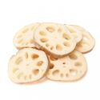

연근
연꽃의 뿌리줄기. 구멍이 많고, 주성분은 녹말이며, 저냐ㆍ죽ㆍ정과(正果) 따위를 만드는 데 쓴다. 얕은 연못이나 깊은 논에서 재배한다.동양산 연, Nelumbo nucifera는 East Indian Lotus라고도 불린다. 일부(예를 들면 Vavilov, 1935)에서는 인도가 원산이고, 남태평양, 오스트레일리아, 아프리카로 전파되었고, 동시에 인도→중국→일본으로 전파되었다고 하지만, 일반적으로는 중국 원산설이 유력하다. N. nucifera는 오랫동안 동양에서 품종분화가 이루어져, 지하경 비대성이 강한 식용 연과 지하경 비대성은 극히 약하지만 꽃의 색채나 꽃잎수, 꽃모양, 추대성 등이 관상적으로 특색을 가진 꽃 연 등 두개의 다른 형태로 분화한 것으로 볼 수 있다. 더욱이 식용 연군은 각종 생태형으로 각지에서 분화했다.
우리나라에서 식용으로 이용하기는 연못에서 자라는 연뿌리를 채취하여 사용하다가 대구지방에는 1950년대 말부터 1960년대 초에 논에서 재배하기 시작한 것으로 추정되며, 광주지방과 경남의 함안 칠서지방에서 많이 재배되었는데 최근에는 식용뿐 아니라 화훼용과 종실용, 잎 전용 연품종이 도입되어 각 지방에 재배되고 있다. 식용은 여전히 대구 지방과 경남의 함안, 전남 무안, 경북 고령에서 많이 재배되고, 새로이 전남 함평, 전북 정읍, 경기 시흥, 강화 등지에 재배를 시작하였다. 뿌리는 요리에 쓰이고, 생식도 하며 전분과 분말제조에 쓰인다. 꽃은 관상용으로 간혹 어린 꽃은 식용으로 쓰인다. 재배면적은 그다지 많지 않으나 전국 각지에서 조금씩 재배되고 있다.
연은 호온성 작물이다. 종근의 발아 최적온도는 12∼15℃로 12℃가 되면 지하경이 자라기 시작한다. 생육기의 수온 및 지온은 25∼30℃가 적당하며 35℃ 이상이면 생육에 장애가 온다. 온도가 15℃ 이하로 내려가면 포기 생장이 정지되고 10℃ 이하가 되면 지상부가 누렇게 변하여 마른다. 토양온도가 8℃이하가 되면 지하경의 생장을 멈춘다. 추운 지방에 토착한 품종이나 조생종에서는 한계온도가 다소 낮은 경우도 있다. 연의 경제적 적지는 15℃이상의 평균온도가 6개월 이상 계속되는 지대이다. 7∼8월의 생육 최성기에 맑은 날과 고온일수가 많은 해에 수량이 높다. 같은 품종에서도 남부지방에서는 비대한 4마디 연근이 착생되지만 산간지 및 냉수가 흐르는 포장이나 수위가 낮은 곳에서는 3마디 연근을 착생하는 것도 있다.
연의 생장은 일조량과 관계가 많다. 흐리고 비가 오는 날이 많거나 나무그늘 아래에서 생장하면 광과 온도가 부족하므로 생장이 약하며 연뿌리의 형성에도 불량하다.
토층이 깊고, 유기질이 풍부한 사양질∼식양질 토양에서 잘 자란다. 식질 토양에서는 연근 조직이 단단하게 비대하고, 마디 사이가 짧아지며, 연결이 불규칙적으로 되어 외관상 나쁜 경우도 있다. 사질토양은 생육이 빨라 조기출하 재배에는 적당하나 육질의 점질성이 적다. 연작에 잘 견디나 연작을 너무 오래하면 부패병이 발생하기 쉽다. 척박하고 단단한 토양에서 재배하면 연뿌리를 형성이 적고 조직이 단단하며 생산량이 낮다.
연 포기는 연약하여 풍해에 견디기 어려워하며 풍속이 15m/초 이상이면 연잎은 해를 받게 된다. 만약 화경과 엽병이 바람에 끊어지고 물이나 이물질이 줄기 안에 들어가면 뿌리를 썩게 한다.
출처 본문 : 농사로 이미지: 구글 이미지
Table(s)
| 작 형 | 파종기 | 수확기 | 성출하기 |
|---|---|---|---|
| 일반재배 | 3월상순 | 10월하순~후년봄 | 11월상순~후년봄 |
| 보통터널 | 4월~5월 | 5월상순~9월하순 | 5월하순~10월상순 |
| 하우스재배 | 2월~3월 | 6월~7월상순 | 6월하순~7월하순 |